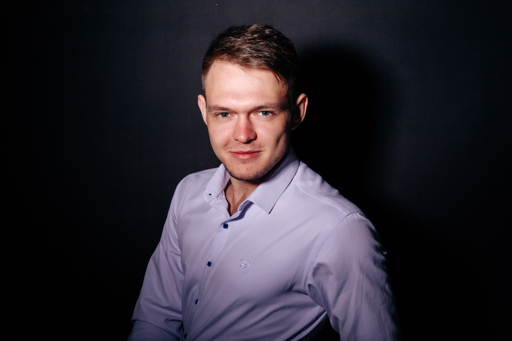

Резюме
Пихурова Матвея

Информационные технологии
В мои профессиональные навыки входит работа с:
C, C++, HTML, CSS, JavaScript, Python, Jquery, Node.js, MongoDB, PHP, GitHub, stoCRM.

Личные достижения
Большую часть своей жизни я занимался спортом.
Около 10 лет я посвятил лёгкой атлетике,
лет 5 плаванию,
также занимался стрельбой.
Всё это не прошло даром и в 2021 году я выполнил 1 спортивный разряд
по полиатлону в дисциплине "пятиборье с бегом".
Коммуникация
Проблем с коллективом никогда не имел.
Часто участвовал в выездных школах актива в университете
таких как:
Кузница кадров 2022
Трамплин
Студент года 2023
и др.